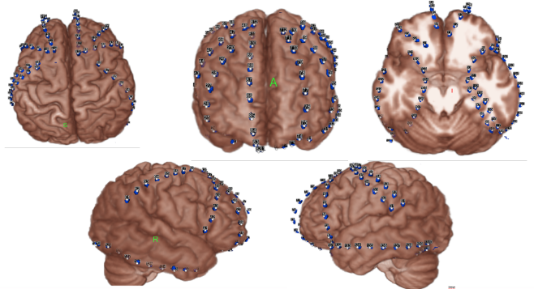

Intracranial Electroencephalography
Support Intracranial Electroencephalography (iEEG) was developed as a BIDS Extension Proposal. Please see Citing BIDS on how to appropriately credit this extension when referring to it in the context of the academic literature.
iEEG recording data
Template:
sub-<label>/
[ses-<label>/]
ieeg/
sub-<label>[_ses-<label>]_task-<label>[_acq-<label>][_run-<index>]_ieeg.<extension>
sub-<label>[_ses-<label>]_task-<label>[_acq-<label>][_run-<index>]_ieeg.json
sub-<label>[_ses-<label>]_task-<label>[_acq-<label>][_run-<index>]_events.json
sub-<label>[_ses-<label>]_task-<label>[_acq-<label>][_run-<index>]_events.tsv
The iEEG community uses a variety of formats for storing raw data, and there is no single standard that all researchers agree on. For BIDS, iEEG data MUST be stored in one of the following formats:
-
European data format (including
edf+; each recording consisting of a.edffile) -
BrainVision Core Data Format (Each recording consisting of a
.vhdr,.vmrk,.eegfile triplet) -
The format used by the MATLAB toolbox EEGLAB (Each recording consisting of a
.setfile with an optional.fdtfile) -
Neurodata Without Borders (Each recording consisting of a
.nwbfile) -
MEF3 (Each recording consisting of a
.mefddirectory)
It is RECOMMENDED to use the European data format, or the BrainVision data format. It is furthermore discouraged to use the other accepted formats over these RECOMMENDED formats, particularly because there are conversion scripts available in most commonly used programming languages to convert data into the RECOMMENDED formats.
Future versions of BIDS may extend this list of supported file formats. File formats for future consideration MUST have open access documentation, MUST have open source implementation for both reading and writing in at least two programming languages and SHOULD be widely supported in multiple software packages. Other formats that may be considered in the future should have a clear added advantage over the existing formats and should have wide adoption in the BIDS community.
The data format in which the data was originally stored is especially valuable
in case conversion elicits the loss of crucial metadata specific to
manufacturers and specific iEEG systems. We also encourage users to provide
additional meta information extracted from the manufacturer-specific data files
in the sidecar JSON file. Other relevant files MAY be included alongside the
original iEEG data in the /sourcedata directory.
Note the RecordingType, which depends on whether the data stream on disk is interrupted or not. Continuous data is by definition 1 segment without interruption. Epoched data consists of multiple segments that all have the same length (for example, corresponding to trials) and that have gaps in between. Discontinuous data consists of multiple segments of different length, for example due to a pause in the acquisition.
Terminology: Electrodes vs. Channels
For proper documentation of iEEG recording metadata it is important to understand the difference between electrode and channel: an iEEG electrode is placed on or in the brain, whereas a channel is the combination of the analog differential amplifier and analog-to-digital converter that result in a potential (voltage) difference that is stored in the iEEG dataset. We employ the following short definitions:
-
Electrode = A single point of contact between the acquisition system and the recording site (for example, scalp, neural tissue, ...). Multiple electrodes can be organized as arrays, grids, leads, strips, probes, shafts, caps (for EEG), and so forth.
-
Channel = A single analog-to-digital converter in the recording system that regularly samples the value of a transducer, which results in the signal being represented as a time series in the digitized data. This can be connected to two electrodes (to measure the potential difference between them), a magnetic field or magnetic gradient sensor, temperature sensor, accelerometer, and so forth.
Although the reference and ground electrodes are often referred to as channels, they are in most common iEEG systems not recorded by themselves. Therefore they are not represented as channels in the data. The type of referencing for all channels and optionally the location of the reference electrode and the location of the ground electrode MAY be specified.
Sidecar JSON (*_ieeg.json)
For consistency between studies and institutions, we encourage users to extract the values of metadata fields from the actual raw data. Whenever possible, please avoid using ad hoc wording.
Generic fields MUST be present:
| Key name | Requirement Level | Data type | Description |
|---|---|---|---|
| TaskName | REQUIRED | string | Name of the task. No two tasks should have the same name. The task label included in the file name is derived from this TaskName field by removing all non-alphanumeric ([a-zA-Z0-9]) characters. For example TaskName "faces n-back" will correspond to task label facesnback. A RECOMMENDED convention is to name resting state task using labels beginning with rest. |
Note that the TaskName field does not have to be a "behavioral task" that subjects perform, but can reflect some information about the conditions present when the data was acquired (for example, "rest", "sleep", or "seizure").
SHOULD be present: For consistency between studies and institutions, we encourage users to extract the values of these fields from the actual raw data. Whenever possible, please avoid using ad hoc wording.
| Key name | Requirement Level | Data type | Description |
|---|---|---|---|
| InstitutionName | RECOMMENDED | string | The name of the institution in charge of the equipment that produced the measurements. |
| InstitutionAddress | RECOMMENDED | string | The address of the institution in charge of the equipment that produced the measurements. |
| InstitutionalDepartmentName | RECOMMENDED | string | The department in the institution in charge of the equipment that produced the measurements. |
| Manufacturer | RECOMMENDED | string | Manufacturer of the equipment that produced the measurements. For example, "TDT", "Blackrock". |
| ManufacturersModelName | RECOMMENDED | string | Manufacturer's model name of the equipment that produced the measurements. |
| SoftwareVersions | RECOMMENDED | string | Manufacturer's designation of software version of the equipment that produced the measurements. |
| TaskDescription | RECOMMENDED | string | Longer description of the task. |
| Instructions | RECOMMENDED | string | Text of the instructions given to participants before the recording. This is especially important in context of resting state recordings and distinguishing between eyes open and eyes closed paradigms. |
| CogAtlasID | RECOMMENDED | string | URI of the corresponding Cognitive Atlas Task term. |
| CogPOID | RECOMMENDED | string | URI of the corresponding CogPO term. |
| DeviceSerialNumber | RECOMMENDED | string | The serial number of the equipment that produced the measurements. A pseudonym can also be used to prevent the equipment from being identifiable, so long as each pseudonym is unique within the dataset. |
Specific iEEG fields MUST be present:
| Key name | Requirement Level | Data type | Description |
|---|---|---|---|
| iEEGReference | REQUIRED | string | General description of the reference scheme used and (when applicable) of location of the reference electrode in the raw recordings (for example, "left mastoid", "bipolar", "T01" for electrode with name T01, "intracranial electrode on top of a grid, not included with data", "upside down electrode"). If different channels have a different reference, this field should have a general description and the channel specific reference should be defined in the channels.tsv file. |
| SamplingFrequency | REQUIRED | number | Sampling frequency (in Hz) of all the data in the recording, regardless of their type (for example, 2400). The sampling frequency of data channels that deviate from the main sampling frequency SHOULD be specified in the channels.tsv file. |
| PowerLineFrequency | REQUIRED | number or "n/a" |
Frequency (in Hz) of the power grid at the geographical location of the instrument (for example, 50 or 60). |
| SoftwareFilters | REQUIRED | object of objects or "n/a" |
Object of temporal software filters applied, or "n/a" if the data is not available. Each key:value pair in the JSON object is a name of the filter and an object in which its parameters are defined as key:value pairs (for example, {"Anti-aliasing filter": {"half-amplitude cutoff (Hz)": 500, "Roll-off": "6dB/Octave"}}). |
Specific iEEG fields SHOULD be present:
| Key name | Requirement Level | Data type | Description |
|---|---|---|---|
| DCOffsetCorrection | DEPRECATED | string | A description of the method (if any) used to correct for a DC offset. If the method used was subtracting the mean value for each channel, use "mean". |
| HardwareFilters | RECOMMENDED | object of objects or "n/a" |
Object of temporal hardware filters applied, or "n/a" if the data is not available. Each key:value pair in the JSON object is a name of the filter and an object in which its parameters are defined as key:value pairs. For example, {"Highpass RC filter": {"Half amplitude cutoff (Hz)": 0.0159, "Roll-off": "6dB/Octave"}}. |
| ElectrodeManufacturer | RECOMMENDED | string | Can be used if all electrodes are of the same manufacturer (for example, "AD-TECH", "DIXI"). If electrodes of different manufacturers are used, please use the corresponding table in the _electrodes.tsv file. |
| ElectrodeManufacturersModelName | RECOMMENDED | string | If different electrode types are used, please use the corresponding table in the _electrodes.tsv file. |
| ECOGChannelCount | RECOMMENDED | integer | Number of ECoG channels. |
| SEEGChannelCount | RECOMMENDED | integer | Number of SEEG channels. |
| EEGChannelCount | RECOMMENDED | integer | Number of EEG channels recorded simultaneously (for example, 21). |
| EOGChannelCount | RECOMMENDED | integer | Number of EOG channels. |
| ECGChannelCount | RECOMMENDED | integer | Number of ECG channels. |
| EMGChannelCount | RECOMMENDED | integer | Number of EMG channels. |
| MiscChannelCount | RECOMMENDED | integer | Number of miscellaneous analog channels for auxiliary signals. |
| TriggerChannelCount | RECOMMENDED | integer | Number of channels for digital (TTL bit level) triggers. |
| RecordingDuration | RECOMMENDED | number | Length of the recording in seconds (for example, 3600). |
| RecordingType | RECOMMENDED | string | Defines whether the recording is "continuous", "discontinuous" or "epoched", where "epoched" is limited to time windows about events of interest (for example, stimulus presentations or subject responses). |
| EpochLength | RECOMMENDED | number | Duration of individual epochs in seconds (for example, 1) in case of epoched data. If recording was continuous or discontinuous, leave out the field. |
| iEEGGround | RECOMMENDED | string | Description of the location of the ground electrode ("placed on right mastoid (M2)"). |
| iEEGPlacementScheme | RECOMMENDED | string | Freeform description of the placement of the iEEG electrodes. Left/right/bilateral/depth/surface (for example, "left frontal grid and bilateral hippocampal depth" or "surface strip and STN depth" or "clinical indication bitemporal, bilateral temporal strips and left grid"). |
| iEEGElectrodeGroups | RECOMMENDED | string | Field to describe the way electrodes are grouped into strips, grids or depth probes. For example, "grid1: 10x8 grid on left temporal pole, strip2: 1x8 electrode strip on xxx". |
| SubjectArtefactDescription | RECOMMENDED | string | Freeform description of the observed subject artefact and its possible cause (for example, "Vagus Nerve Stimulator", "non-removable implant"). If this field is set to "n/a", it will be interpreted as absence of major source of artifacts except cardiac and blinks. |
Specific iEEG fields MAY be present:
| Key name | Requirement Level | Data type | Description |
|---|---|---|---|
| ElectricalStimulation | OPTIONAL | boolean | Boolean field to specify if electrical stimulation was done during the recording (options are true or false). Parameters for event-like stimulation should be specified in the events.tsv file. |
| ElectricalStimulationParameters | OPTIONAL | string | Free form description of stimulation parameters, such as frequency or shape. Specific onsets can be specified in the events.tsv file. Specific shapes can be described here in freeform text. |
Example:
{
"TaskName":"visual",
"InstitutionName":"Stanford Hospital and Clinics",
"InstitutionAddress":"300 Pasteur Dr, Stanford, CA 94305",
"Manufacturer":"Tucker Davis Technologies",
"ManufacturersModelName":"n/a",
"TaskDescription":"visual gratings and noise patterns",
"Instructions":"look at the dot in the center of the screen and press the button when it changes color",
"iEEGReference":"left mastoid",
"SamplingFrequency":1000,
"PowerLineFrequency":60,
"SoftwareFilters":"n/a",
"HardwareFilters":{"Highpass RC filter": {"Half amplitude cutoff (Hz)": 0.0159, "Roll-off": "6dBOctave"}},
"ElectrodeManufacturer":"AdTech",
"ECOGChannelCount":120,
"SEEGChannelCount":0,
"EEGChannelCount":0,
"EOGChannelCount":0,
"ECGChannelCount":0,
"EMGChannelCount":0,
"MiscChannelCount":0,
"TriggerChannelCount":0,
"RecordingDuration":233.639,
"RecordingType":"continuous",
"iEEGGround":"placed on the right mastoid",
"iEEGPlacementScheme":"right occipital temporal surface",
"ElectricalStimulation":false
}
Note that the date and time information SHOULD be stored in the Study key file
(scans.tsv).
Date time information MUST be expressed as indicated in Units
Channels description (*_channels.tsv)
Template:
sub-<label>/
[ses-<label>/]
ieeg/
sub-<label>[_ses-<label>]_task-<label>[_acq-<label>][_run-<index>]_channels.json
sub-<label>[_ses-<label>]_task-<label>[_acq-<label>][_run-<index>]_channels.tsv
A channel represents one time series recorded with the recording system (for
example, there can be a bipolar channel, recorded from two electrodes or contact
points on the tissue).
Although this information can often be extracted from the iEEG recording,
listing it in a simple .tsv document makes it easy to browse or search (for example,
searching for recordings with a sampling frequency of >=1000 Hz).
Hence, the channels.tsv is RECOMMENDED.
Channels SHOULD appear in the table in the same order they do in the iEEG data
file.
Any number of additional columns may be provided to provide additional
information about the channels.
Note that electrode positions SHOULD NOT be added to this file but to
*_electrodes.tsv.
The columns of the Channels description table stored in *_channels.tsv are:
MUST be present in this specific order:
| Column name | Requirement level | Description |
|---|---|---|
| name | REQUIRED | Label of the channel. The label must correspond to _electrodes.tsv name and all ieeg type channels are required to have a position. The reference channel name MAY be provided in the reference column. |
| type | REQUIRED | Type of channel, see below for adequate keywords in this field. Note that the type MUST be in upper case. |
| units | REQUIRED | Physical unit of the value represented in this channel, for example, V for Volt, or fT/cm for femto Tesla per centimeter (see Units). |
| low_cutoff | REQUIRED | Frequencies used for the low pass filter applied to the channel in Hz. If no low pass filter was applied, use n/a. Note that anti-alias is a low pass filter, specify its frequencies here if applicable. |
| high_cutoff | REQUIRED | Frequencies used for the high pass filter applied to the channel in Hz. If no high pass filter applied, use n/a. |
SHOULD be present:
| Column name | Requirement level | Description |
|---|---|---|
| reference | OPTIONAL | Specification of the reference (for example, 'mastoid', 'ElectrodeName01', 'intracranial', 'CAR', 'other', 'n/a'). If the channel is not an electrode channel (for example, a microphone channel) use n/a. |
| group | OPTIONAL | Which group of channels (grid/strip/seeg/depth) this channel belongs to. This is relevant because one group has one cable-bundle and noise can be shared. This can be a name or number. Note that any groups specified in _electrodes.tsv must match those present here. |
| sampling_frequency | OPTIONAL | Sampling rate of the channel in Hz. |
| description | OPTIONAL | Brief free-text description of the channel, or other information of interest (for example, position (for example, "left lateral temporal surface")). |
| notch | OPTIONAL | Frequencies used for the notch filter applied to the channel, in Hz. If no notch filter applied, use n/a. |
| status | OPTIONAL | Data quality observed on the channel (good/bad). A channel is considered bad if its data quality is compromised by excessive noise. Description of noise type SHOULD be provided in [status_description]. |
| status_description | OPTIONAL | Freeform text description of noise or artifact affecting data quality on the channel. It is meant to explain why the channel was declared bad in [status]. |
Example sub-01_channels.tsv:
name type units low_cutoff high_cutoff status status_description
LT01 ECOG uV 300 0.11 good n/a
LT02 ECOG uV 300 0.11 bad broken
H01 SEEG uV 300 0.11 bad line_noise
ECG1 ECG uV n/a 0.11 good n/a
TR1 TRIG n/a n/a n/a good n/a
Restricted keyword list for field type in alphabetic order (shared with the MEG and EEG modality; however, only types that are common in iEEG data are listed here). Note that upper-case is REQUIRED:
| Keyword | Description |
|---|---|
| EEG | Electrode channel from electroencephalogram |
| ECOG | Electrode channel from electrocorticogram (intracranial) |
| SEEG | Electrode channel from stereo-electroencephalogram (intracranial) |
| DBS | Electrode channel from deep brain stimulation electrode (intracranial) |
| VEOG | Vertical EOG (electrooculogram) |
| HEOG | Horizontal EOG |
| EOG | Generic EOG channel if HEOG or VEOG information not available |
| ECG | ElectroCardioGram (heart) |
| EMG | ElectroMyoGram (muscle) |
| TRIG | System Triggers |
| AUDIO | Audio signal |
| PD | Photodiode |
| EYEGAZE | Eye Tracker gaze |
| PUPIL | Eye Tracker pupil diameter |
| MISC | Miscellaneous |
| SYSCLOCK | System time showing elapsed time since trial started |
| ADC | Analog to Digital input |
| DAC | Digital to Analog output |
| REF | Reference channel |
| OTHER | Any other type of channel |
Example of free-form text for field description:
- intracranial, stimulus, response, vertical EOG, skin conductance
Electrode description (*_electrodes.tsv)
Template:
sub-<label>/
[ses-<label>/]
ieeg/
sub-<label>[_ses-<label>][_acq-<label>][_space-<label>]_electrodes.json
sub-<label>[_ses-<label>][_acq-<label>][_space-<label>]_electrodes.tsv
File that gives the location, size and other properties of iEEG electrodes. Note
that coordinates are expected in cartesian coordinates according to the
iEEGCoordinateSystem and iEEGCoordinateUnits fields in
*_coordsystem.json. If an *_electrodes.tsv file is specified, a
*_coordsystem.json file MUST be specified as well.
The optional space-<label> entity (*[_space-<label>]_electrodes.tsv) can be used to
indicate the way in which electrode positions are interpreted.
The space <label> MUST be taken from one of the modality specific lists in
Appendix VIII.
For example for iEEG data, the restricted keywords listed under
iEEG Specific Coordinate Systems
are acceptable for <label>.
For examples:
-
_space-MNI152Lin(electrodes are coregistred and scaled to a specific MNI template) -
_space-Talairach(electrodes are coregistred and scaled to Talairach space)
When referring to the *_electrodes.tsv file in a certain space as defined
above, the space-<label> of the accompanying *_coordsystem.json MUST
correspond.
For example:
└─ sub-01/
├─ sub-01_space-Talairach_electrodes.tsv
├─ sub-01_space-Talairach_coordsystem.json
└─ ...
The order of the required columns in the *_electrodes.tsv file MUST be as
listed below.
MUST be present in this specific order:
| Column name | Requirement level | Description |
|---|---|---|
| name | REQUIRED | Name of the electrode contact point. |
| x | REQUIRED | X position. The positions of the center of each electrode in xyz space. Units are specified in space-<label>_coordsystem.json. |
| y | REQUIRED | Y position. |
| z | REQUIRED | Z position. If electrodes are in 2D space this should be a column of n/a values. |
| size | REQUIRED | Surface area of the electrode, units MUST be in mm^2. |
SHOULD be present:
| Column name | Requirement level | Description |
|---|---|---|
| material | RECOMMENDED | Material of the electrodes. |
| manufacturer | RECOMMENDED | The manufacturer for each electrode. Can be used if electrodes were manufactured by more than one company. |
| group | RECOMMENDED | The group that the electrode is a part of. Note that any group specified here should match a group specified in _channels.tsv. |
| hemisphere | RECOMMENDED | The hemisphere in which the electrode is placed, one of ['L' or 'R'] (use capital). |
MAY be present:
| Column name | Requirement level | Description |
|---|---|---|
| type | OPTIONAL | Optional type of the electrode, for example, cup, ring, clip-on, wire, needle, ... |
| impedance | OPTIONAL | Impedance of the electrode, units MUST be in kOhm. |
| dimension | OPTIONAL | Size of the group (grid/strip/probe) that this electrode belongs to. Must be of form [AxB] with the smallest dimension first (for example, [1x8]). |
Example:
name x y z size manufacturer
LT01 19 -39 -16 2.3 Integra
LT02 23 -40 -19 2.3 Integra
H01 27 -42 -21 5 AdTech
Coordinate System JSON (*_coordsystem.json)
Template:
sub-<label>/
[ses-<label>/]
ieeg/
sub-<label>[_ses-<label>][_acq-<label>][_space-<label>]_coordsystem.json
This _coordsystem.json file contains the coordinate system in which electrode
positions are expressed. The associated MRI, CT, X-Ray, or operative photo can
also be specified.
General fields:
| Key name | Requirement Level | Data type | Description |
|---|---|---|---|
| IntendedFor | OPTIONAL | string or array of strings | The paths to files for which the associated file is intended to be used. Contains one or more filenames with paths relative to the participant subfolder. Paths need to use forward slashes instead of backward slashes, regardless of operating system. If only a surface reconstruction is available, this should point to the surface reconstruction file. Note that this file should have the same coordinate system specified in iEEGCoordinateSystem. For example, T1: 'sub-<label>/ses-<label>/anat/sub-01_T1w.nii.gz' Surface: '/derivatives/surfaces/sub-<label>/ses-<label>/anat/sub-01_desc-T1w_hemi-R_pial.surf.gii' Operative photo: '/sub-<label>/ses-<label>/ieeg/sub-0001_ses-01_acq-photo1_photo.jpg' Talairach: '/derivatives/surfaces/sub-Talairach/ses-01/anat/sub-Talairach_hemi-R_pial.surf.gii' |
Fields relating to the iEEG electrode positions:
| Key name | Requirement Level | Data type | Description |
|---|---|---|---|
| iEEGCoordinateSystem | REQUIRED | string | Defines the coordinate system for the iEEG sensors. See Appendix VIII for a list of restricted keywords for coordinate systems. If "Other", provide definition of the coordinate system in iEEGCoordinateSystemDescription. If positions correspond to pixel indices in a 2D image (of either a volume-rendering, surface-rendering, operative photo, or operative drawing), this MUST be "Pixels". For more information, see the section on 2D coordinate systems. |
| iEEGCoordinateUnits | REQUIRED | string | Units of the *_electrodes.tsv, MUST be "m", "mm", "cm" or "pixels". MUST be "pixels" if iEEGCoordinateSystem is Pixels. |
| iEEGCoordinateSystemDescription | RECOMMENDED, but REQUIRED if iEEGCoordinateSystem is "Other" |
string | Free-form text description of the coordinate system. May also include a link to a documentation page or paper describing the system in greater detail. |
| iEEGCoordinateProcessingDescription | RECOMMENDED | string | Has any post-processing (such as projection) been done on the electrode positions (for example, "surface_projection", "none"). |
| iEEGCoordinateProcessingReference | RECOMMENDED | string | A reference to a paper that defines in more detail the method used to localize the electrodes and to post-process the electrode positions. |
Recommended 3D coordinate systems
It is preferred that electrodes are localized in a 3D coordinate system (with respect to a pre- and/or post-operative anatomical MRI or CT scans or in a standard space as specified in BIDS Appendix VIII about preferred names of coordinate systems, such as ACPC).
Allowed 2D coordinate systems
If electrodes are localized in 2D space (only x and y are specified and z is "n/a"),
then the positions in this file MUST correspond to the locations expressed
in pixels on the photo/drawing/rendering of the electrodes on the brain.
In this case, iEEGCoordinateSystem MUST be defined as "Pixels",
and iEEGCoordinateUnits MUST be defined as "pixels"
(note the difference in capitalization).
Furthermore, the coordinates MUST be (row,column) pairs,
with (0,0) corresponding to the upper left pixel and (N,0) corresponding to the lower left pixel.
Multiple coordinate systems
If electrode positions are known in multiple coordinate systems (for example, MRI, CT
and MNI), these spaces can be distinguished by the optional space-<label>
field, see the *_electrodes.tsv-section
for more information.
Note that the space-<label> fields must correspond
between *_electrodes.tsv and *_coordsystem.json if they refer to the same
data.
Example:
{
"IntendedFor": "/sub-01/ses-01/anat/sub-01_T1w.nii.gz",
"iEEGCoordinateSystem": "ACPC",
"iEEGCoordinateUnits": "mm",
"iEEGCoordinateSystemDescription": "Coordinate system with the origin at anterior commissure (AC), negative y-axis going through the posterior commissure (PC), z-axis going to a mid-hemisperic point which lies superior to the AC-PC line, x-axis going to the right",
"iEEGCoordinateProcessingDescription": "surface_projection",
"iEEGCoordinateProcessingReference": "Hermes et al., 2010 JNeuroMeth"
}
Photos of the electrode positions (*_photo.jpg)
Template:
sub-<label>/
[ses-<label>/]
ieeg/
sub-<label>[_ses-<label>][_acq-<label>]_photo.jpg
These can include photos of the electrodes on the brain surface, photos of anatomical features or landmarks (such as sulcal structure), and fiducials. Photos can also include an X-ray picture, a flatbed scan of a schematic drawing made during surgery, or screenshots of a brain rendering with electrode positions. The photos may need to be cropped and/or blurred to conceal identifying features or entirely omitted prior to sharing, depending on obtained consent.
If there are photos of the electrodes, the acq-<label> entity should be specified
with:
-
*_photo.jpgin case of an operative photo -
*_acq-xray#_photo.jpgin case of an x-ray picture -
*_acq-drawing#_photo.jpgin case of a drawing or sketch of electrode placements -
*_acq-render#_photo.jpgin case of a rendering
The ses-<label> entity may be used to specify when the photo was taken.
Example of the operative photo of ECoG electrodes (here is an annotated example in which electrodes and vasculature are marked, taken from Hermes et al., JNeuroMeth 2010).
└─ sub-01/
└─ ses-0001/
├─ sub-0001_ses-01_acq-photo1_photo.jpg
├─ sub-0001_ses-01_acq-photo2_photo.jpg
└─ ...

Below is an example of a volume rendering of the cortical surface with a superimposed subdural electrode implantation. This map is often provided by the
EEG technician and provided to the epileptologists (for example, see Burneo JG et al. 2014. doi:10.1016/j.clineuro.2014.03.020).
sub-0002_ses-01_acq-render_photo.jpg

Electrical stimulation
In case of electrical stimulation of brain tissue by passing current through the
iEEG electrodes, and the electrical stimulation has an event structure (on-off,
onset, duration), the _events.tsv file can contain the electrical stimulation
parameters in addition to other events. Note that these can be intermixed with
other task events. Electrical stimulation parameters can be described in columns
called electrical_stimulation_<label>, with labels chosen by the researcher and
optionally defined in more detail in an accompanying _events.json file (as
per the main BIDS spec). Functions for complex stimulation patterns can, similar
as when a video is presented, be stored in a folder in the /stimuli/ folder.
For example: /stimuli/electrical_stimulation_functions/biphasic.tsv
Example:
onset duration trial_type electrical_stimulation_type electrical_stimulation_site electrical_stimulation_current
1.2 0.001 electrical_stimulation biphasic LT01-LT02 0.005
1.3 0.001 electrical_stimulation biphasic LT01-LT02 0.005
2.2 0.001 electrical_stimulation biphasic LT02-LT03 0.005
4.2 1 electrical_stimulation complex LT02-LT03 n/a
15.2 3 auditory_stimulus n/a n/a n/a